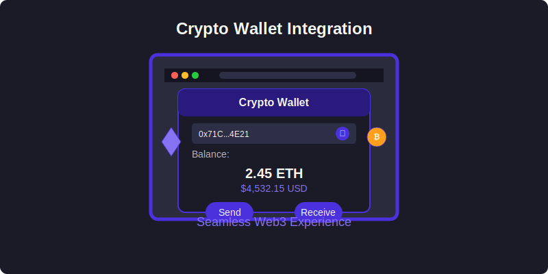

Crypto Wallet Integration
Macro Browser provides seamless integration with cryptocurrency wallets, enabling direct interaction with Web3 applications and blockchain networks.

Overview
Rather than building yet another crypto wallet that users need to manage, Macro Browser focuses on providing a smooth interface with existing wallets. This approach gives users flexibility while maintaining security.
Connection Methods
1. External Wallet Connection
Connect popular external wallets directly to Macro Browser:
- MetaMask: Industry-standard Ethereum wallet
- Coinbase Wallet: User-friendly option with wide adoption
- WalletConnect: Connect to mobile wallets via QR code
- Ledger/Trezor: Hardware wallet support for enhanced security
- Other EIP-1193 Compatible Wallets: Support for standard Ethereum wallet interfaces
2. Built-in Lightweight Wallet
For users who prefer an all-in-one solution, Macro Browser includes a built-in lightweight wallet:
- Basic functionality: Send, receive, and store tokens
- Local secure storage: Private keys encrypted on your device
- Seed phrase backup: Standard recovery options
- Multiple network support: Connect to various Ethereum-compatible networks
Web3 Capabilities
dApp Interaction
Macro Browser provides native support for decentralized applications:
- Provider API: Standard Web3 provider for dApp connectivity
- Transaction Signing: Secure signing of blockchain transactions
- Message Signing: Support for message signing (EIP-712, personal_sign)
- Chain Switching: Easy network switching for multi-chain dApps
Network Support
Connect to multiple blockchain networks:
- Ethereum Mainnet: Primary Ethereum network
- Layer 2 Networks: Optimism, Arbitrum, zkSync, etc.
- Sidechains: Polygon, Gnosis Chain, etc.
- Alternative EVM Chains: Binance Smart Chain, Avalanche, etc.
- Testnets: Goerli, Sepolia, Mumbai, etc.
- Custom Networks: Add custom RPC endpoints
Security Features
Transaction Protection
- Clear Approval UI: Transactions are presented in a clear, understandable format
- Gas Estimation: Accurate gas fee estimates before transaction approval
- Phishing Protection: Warnings for suspicious contracts or websites
- Spending Limits: Optional limits on transaction amounts
- Contract Verification: Verification of contract source code when available
Privacy Enhancements
- Connection Isolation: dApp connections are isolated by domain
- Privacy Mode: Control which accounts are exposed to websites
- Request Filtering: Filter unnecessary Web3 requests
- Chain ID Validation: Prevent cross-chain replay attacks
Key Management
- Secure Storage: Encrypted storage of sensitive wallet data
- Key Derivation: Industry-standard key derivation methods
- Memory Protection: Private key never exposed in plain text in memory
- Auto-locking: Session timeout for added security
User Interface
Connection Management
Manage your wallet connections through a dedicated interface:
- Connection Status: See which wallets are currently connected
- Quick Connect/Disconnect: Toggle wallet connections with one click
- Chain Selector: Change networks directly from the toolbar
- Account Switcher: Switch between multiple accounts
Transaction Dashboard
Monitor your transaction activity:
- Pending Transactions: View currently pending transactions
- Transaction History: See recent transaction activity (in-memory only)
- Receipt Verification: Verify transaction completion
- Gas Analytics: Monitor gas costs over time
Balance Overview
View your balances without leaving the browser:
- Token Balances: See all your token balances at a glance
- Token Details: View detailed information about each token
- Price Information: Current market values in your preferred currency
- Portfolio View: Overall portfolio valuation
Technical Implementation
Macro Browser integrates with crypto wallets through standardized interfaces:
// Example of wallet provider integration
import { providers } from 'ethers';
import MetaMaskOnboarding from '@metamask/onboarding';
// Create a Web3 provider
const provider = new providers.Web3Provider(window.ethereum);
// Request account access
async function connectWallet() {
try {
// Request account access if needed
const accounts = await provider.send('eth_requestAccounts', []);
return accounts[0];
} catch (error) {
// User denied account access
console.error('User denied account access');
// If MetaMask is not installed, start onboarding process
if (!MetaMaskOnboarding.isMetaMaskInstalled()) {
const onboarding = new MetaMaskOnboarding();
onboarding.startOnboarding();
}
return null;
}
}
// Sign a transaction
async function signTransaction(transaction) {
const signer = provider.getSigner();
return await signer.sendTransaction(transaction);
}
Development Resources
For developers building Web3 applications that interact with Macro Browser:
- Standard Compliance: Macro Browser follows EIP-1193 and other relevant Ethereum standards
- Provider API: The
window.ethereumobject is available for dApp connectivity - Chain Management: Support for EIP-3085 (wallet_addEthereumChain) and EIP-3326 (wallet_switchEthereumChain)
- Signature Standards: Support for various signing methods (eth_sign, personal_sign, eth_signTypedData)